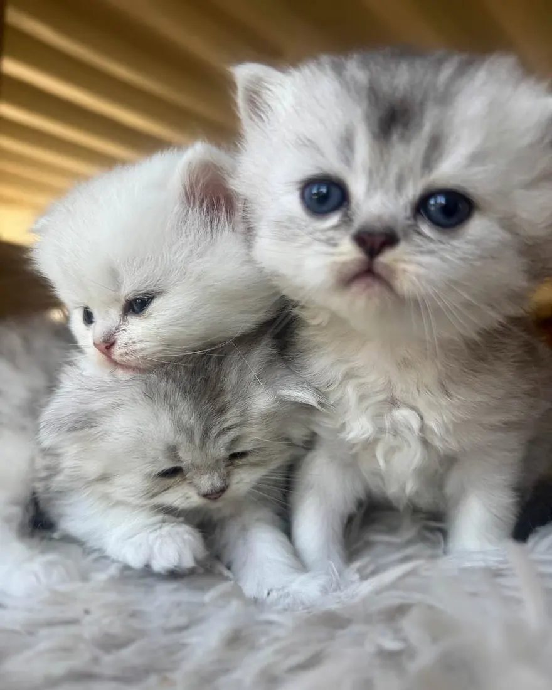

Liste d'attente
Rejoignez notre liste d'attente : vous êtes prioritaire dès qu'un chaton correspondant à vos critères est disponible.
Réserver votre futur compagnon
En versant un acompte de 200 €, vous rejoignez notre liste d'attente et êtes prioritaire dès qu'un chaton correspondant à vos critères (couleur, sexe) est disponible. Cette somme est ensuite déduite du prix d'achat le jour où vous choisissez votre chaton.
Prioritaire
Vous êtes prévenu avant tout le monde dès qu'un chaton correspondant à vos critères est disponible.
Acompte de 200 €
Il est déduit du prix de votre chaton le jour où vous le choisissez.
Le chaton qu'il vous faut
Nous vous proposons jusqu'à trois chatons correspondant à ce que vous cherchez.
Les conditions, en toute transparence
- Nous vous proposons jusqu'à trois chatons correspondant à vos critères
- Après trois refus, votre place sur la liste est libérée
- L'acompte n'est pas remboursable une fois versé
- Plus vous êtes ouvert sur la couleur et le sexe, plus l'attente est courte
Ces conditions vous sont remises par écrit avant tout versement. Posez-nous toutes vos questions : nous préférons un échange franc à une réservation précipitée.
Adopter
Les six étapes
Vous nous écrivez
Présentez-vous en quelques lignes : votre foyer, vos autres animaux, ce que vous cherchez. Plus vous êtes précis, mieux nous vous orientons.
Nous échangeons
Par téléphone le plus souvent. Nous vous disons franchement ce que nous avons, ce que nous n'avons pas, et combien de temps il faudra attendre.
Vous venez nous voir
Sur rendez-vous. Vous rencontrez les chatons, vous voyez où ils grandissent et vous posez toutes vos questions.
La réservation
Versement de l'acompte de 200 €, déduit du prix du chaton. Vous recevez les documents à signer, dont le certificat d'engagement et de connaissance.
Le délai de réflexion
La loi impose sept jours entre la signature du certificat d'engagement et de connaissance et la remise du chaton. Ce délai est fait pour vous.
Le départ, vers douze semaines
Vous repartez avec le chaton, son dossier complet et notre numéro. Nous restons disponibles après l'adoption.

Nos conditions
- Départ
- vers 12 semaines
- Acompte
- 200 €
- Visite
- sur rendez-vous
- Vie
- en intérieur, de préférence
- Pedigree
- LOOF
- Suivi
- après l'adoption
Contactez-nous pour connaître le prix d'un chaton.
Santé
Ce qu'on dépiste chez le British, et pourquoi
Quatre sujets à connaître avant d'adopter un British. Posez ces questions à tout éleveur, nous compris : les réponses en disent long.
La cardiomyopathie hypertrophique
C'est la maladie cardiaque la plus fréquente chez le chat, et le British y est prédisposé. Elle se dépiste par échographie du cœur réalisée par un vétérinaire cardiologue, répétée dans le temps, car un chat sain à deux ans peut se déclarer plus tard.
Méfiez-vous d'un « test ADN HCM » annoncé chez le British : les tests génétiques existants concernent d'autres races. Chez le British, seule l'échographie fait foi.
La polykystose rénale
La PKD se transmet de façon dominante et se dépiste par un test ADN, une seule fois dans la vie du chat. Un reproducteur testé négatif ne peut pas transmettre la mutation.
Un test ADN est définitif : demandez le résultat du laboratoire, pas une déclaration.
Les groupes sanguins A et B
C'est la particularité du British qu'on oublie le plus souvent. Un chaton de groupe A né d'une mère de groupe B peut mourir dans ses premiers jours, empoisonné par le colostrum maternel. On appelle cela l'isoérythrolyse néonatale.
Connaître le groupe de chaque reproducteur permet d'éviter ces mariages ou de protéger les chatons à la naissance.
FIV et FeLV
Le virus de l'immunodéficience féline et celui de la leucose se dépistent par une simple prise de sang. Un chat qui vit à l'intérieur, ou avec une sortie sécurisée, est à l'abri de l'essentiel du risque.
Vaccins, vermifuges et suivi vétérinaire : c'est la routine invisible d'un élevage, celle qui ne se voit pas sur les photos.
Ce qu'aucun éleveur honnête ne promet. Personne ne peut garantir un chat « sans maladie génétique » ni « en bonne santé à vie ». Votre chaton part identifié, vacciné, avec son carnet de santé et un certificat vétérinaire. Les garanties légales, vices rédhibitoires et garantie de conformité, s'appliquent de plein droit.
Le jour J
Préparer son arrivée
Une seule pièce
Installez litière, gamelles, griffoir et couchage dans une pièce calme, et laissez-le en sortir de lui-même. Il quitte sa mère, sa fratrie et tous ses repères le même jour.
La même nourriture
Il part avec de quoi tenir les premiers jours. Pour changer, faites-le sur dix à quinze jours en mélangeant : un changement brutal, c'est une diarrhée assurée dans une semaine déjà stressante.
Un logement sûr
Fils électriques, produits ménagers, plantes toxiques, fenêtres oscillo-battantes et balcon : tout cela se règle avant son arrivée, pas après.
Les présentations
Avec un autre animal, on échange d'abord les odeurs, puis on fait des rencontres courtes et surveillées. Comptez une à trois semaines.
Le vétérinaire
Prenez rendez-vous dans les jours qui suivent, avec son carnet de santé. C'est aussi l'occasion de choisir votre vétérinaire.
Et nous
Envoyez-nous des nouvelles et des photos, et appelez-nous à la moindre question : nous restons disponibles après l'adoption.
Questions fréquentes
Ce qu'on nous demande le plus souvent
Combien coûte un chaton chez vous ?
Le prix dépend notamment de la couleur, du sexe et du type, Shorthair ou Longhair. Contactez-nous : nous vous donnons le prix exact du chaton qui vous intéresse.
Une réservation de 200 € est demandée pour garantir l'adoption. Elle est déduite du prix du chaton.
Faut-il adopter un ou deux chatons ?
Si personne n'est à la maison la journée, deux, sans hésiter. Un British s'ennuie en silence : il ne miaule pas, il dort, il mange, il grossit. Deux chatons se dépensent, se lavent et se calment mutuellement, et le travail pour vous est à peine doublé.
Si quelqu'un est présent la plupart du temps et qu'il y a déjà de la vie à la maison, un seul chaton s'épanouit très bien. Nous en parlons ensemble avant de décider.
Un British peut-il vivre en appartement ?
Oui, c'est même une des races les mieux adaptées : calme, peu grimpeur, il ne cherche pas à sortir. Deux conditions quand même. Des points d'observation en hauteur, arbre à chat ou étagère près d'une fenêtre. Et un vrai temps de jeu quotidien, parce que l'appartement plus le tempérament posé du British, c'est la recette de la prise de poids. Un balcon doit être sécurisé par un filet.
Est-ce qu'il s'entend avec les enfants ?
Très bien, et c'est une de ses grandes qualités. Il est patient et ne griffe pratiquement jamais : quand il en a assez, il s'en va. C'est justement ce qu'il faut apprendre aux enfants, le laisser partir, ne pas le poursuivre, ne pas le porter comme une poupée.
Et avec un chien, ou avec mes autres chats ?
Très bien, avec de la méthode. On installe le chaton dans une pièce à lui pendant quelques jours, on échange les odeurs avec une couverture ou un jouet, puis on fait des rencontres courtes et surveillées avant le face-à-face.
Comptez une à trois semaines pour une cohabitation sereine. Le British est peu bagarreur : c'est en général le résident qui a besoin de temps, pas lui.
Le British est-il hypoallergénique ?
Non, et aucune race ne l'est vraiment. L'allergie vient d'une protéine de la salive et des squames, pas du poil : un Shorthair n'est donc pas moins allergisant qu'un Longhair.
Si quelqu'un du foyer est allergique, parlez-en à un allergologue avant de vous engager, et venez passer un moment chez nous.
Est-ce qu'il perd beaucoup ses poils ?
Oui, comme tous les chats, et davantage au printemps et à l'automne. La fourrure du British est dense, avec un sous-poil épais : un bon brossage par semaine en temps normal, deux ou trois pendant la mue, avec un peigne ou une brosse qui atteint le sous-poil.
Le British Longhair demande un brossage tous les deux jours, surtout derrière les oreilles et sur les culottes.
Que mange-t-il, et puis-je changer de nourriture ?
Nos chatons partent avec de quoi tenir les premiers jours. Si vous souhaitez changer, faites-le progressivement sur dix à quinze jours en mélangeant les deux aliments.
Notre article Guide complet sur l'alimentation du chat répond à la plupart des questions.
J'habite loin, comment le chaton peut-il me rejoindre ?
Nous sommes à Othis, à vingt minutes de l'aéroport Paris-Charles de Gaulle. Nous pouvons vous apporter le chaton à la gare de Roissy ou de Saint-Mard, et il existe des taxis animaliers si vous habitez plus loin.
Nous livrons en France, en Suisse et en Belgique. Parlons-en ensemble pour trouver la solution la plus douce pour lui.
Peut-on venir voir les chatons avant de décider ?
Oui, et nous vous y encourageons. Les visites se font uniquement sur rendez-vous : vous rencontrez les chatons, vous voyez où ils ont grandi et vous posez toutes vos questions.
Comment réserve-t-on, et à quoi sert l'acompte ?
Après notre échange et, idéalement, une visite, la réservation se fait par le versement de l'acompte de 200 €, qui est déduit du prix du chaton. Il bloque le chaton à votre nom.
Nous signons ensuite le certificat d'engagement et de connaissance, et la loi impose un délai de réflexion de sept jours avant le départ.
Combien de temps faut-il attendre ?
Cela dépend de ce que vous cherchez. Si vous voulez une couleur précise, l'attente est plus longue ; si vous êtes ouvert sur la couleur et le sexe, elle est souvent bien plus courte. Nous vous le disons franchement dès le premier échange.
Faut-il faire stériliser son chaton ?
Pour nos chatons mâles, oui : nous demandons aux futurs propriétaires de s'engager à les faire stériliser dès l'âge de 6 à 7 mois, afin d'éviter les comportements de marquage.
Parlez-en avec votre vétérinaire lors de la première visite : il vous indiquera le bon moment.
Un chaton Longhair peut-il naître de deux Shorthair ?
Oui. Le poil long est un caractère récessif : deux British Shorthair porteurs du gène peuvent donner des Longhair dans la même portée. C'est le même chat, la même race et le même standard, avec une fourrure plus longue et un brossage plus régulier.
Une question qui n'est pas là ? Écrivez-nous.